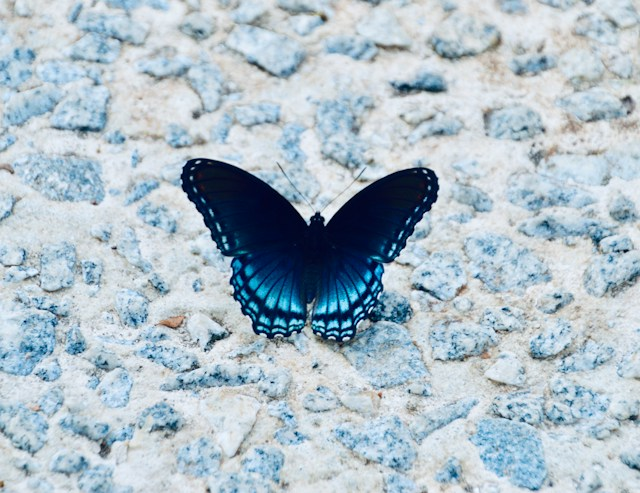
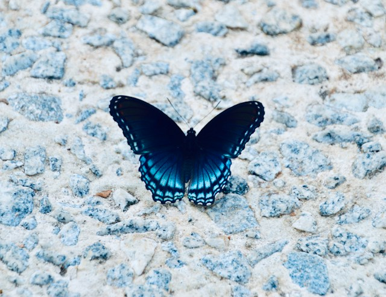

Poem by Samuel Taylor Coleridge
The butterfly the ancient Grecians made
The soul's fair emblem, and its only name
But of the soul, escaped the slavish trade
Of mortal life! For in this earthly frame
Ours is the reptile's lot, much toil, much blame,
Manifold motions making little speed,
And to deform and kill the things whereon we feed.